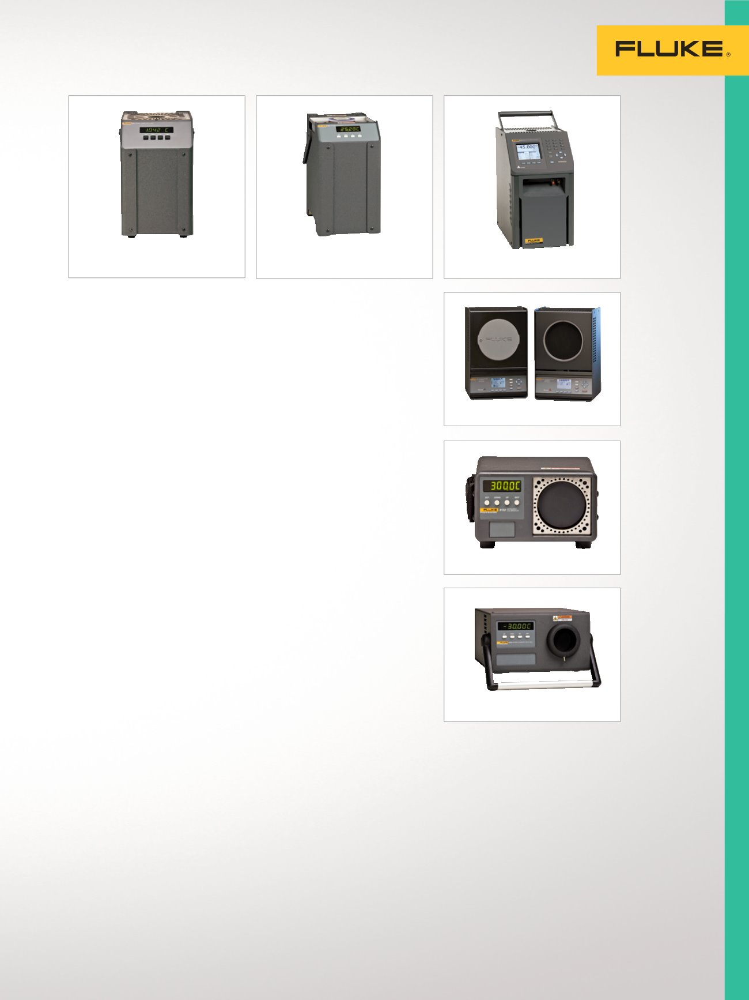

6102/7102/7103
9150
9170/9171/9172/9173
19
Temperaturkalibrierung
Thermoelementofen 9150
Praktischer portabler
Thermoelement-Ofen
•
150 bis 1200 °C
•
Stabilität von ±0,5 °C über den
gesamten Bereich
•
Kalibrierschein mit Rückführ-
barkeit auf NIST im Lieferumfang
•
Standardmäßig mit RS-232-Port
•
NIST-rückführbare Kalibrierung
6102/7102/7103
Mikrobäder
Kalibrieren von Messfühlern
mit vielen unterschiedlichen
Durchmessern – keine Hülsen
erforderlich.
•
Drei Modelle decken Tempera-
turen von –30 °C bis 200 °C ab
•
Die weltweit kleinsten portablen
Kalibrierbäder
•
Stabilität bis ±0,015 °C
•
NIST-rückführbare Kalibrierung
Metrologie-Blockkalibratoren
9170/9171/9172/9173
Größtmögliche Genauigkeit in einem
Blockkalibrator mit Trockenkammer
•
Industrielle Temperaturquellen
mit den weltweit besten
Funktionsmerkmalen (höchste
Stabilität von ±0,005 °C)
•
Eintauchtiefe bis 203 mm
(8 Zoll)
•
Optional integrierte Anzeige für
Referenz-PRTs bis ±0,006 °C
•
Bereiche:
- 9170: –45 °C bis 140 °C
- 9171: –30 °C bis 155 °C
- 9172: 35 °C bis 425 °C
- 9173: 50 °C bis 700 °C
•
NVLAP-akkreditierte Kalibrierung
Infrarotkalibratoren
4180/4181
Bewährte Konstruktion für
zielgenaue und rückführbare
Kalibrierungen
•
Aussagekräftige, konsistente
Ergebnisse durch radiometrische
Kalibrierung
•
Kalibrierschein im Lieferumfang
•
Genaue und zuverlässige
Ergebnisse im Temperaturbereich
von –15 °C bis 500 °C
•
Ziel mit großem Durchmesser von
152 mm (6 Zoll)
•
Radiometrisches Kalibrierzertifi-
kat aus akkreditiertem Labor
9132/9133 Feld-
Infrarot-Kalibratoren
Genauigkeit für Ihre
Anforderungen an die
Infrarottemperaturkalibrierung.
•
Verifizieren von IR-Pyrometern
von –30 °C bis 500 °C (–22 °F
bis 932 °F)
•
Bohrung für Referenztemperatur-
messungen mit RTD
•
NIST-rückführbare
Kontaktkalibrierung
Infrarotkalibratoren
Infrarotkalibratoren für
Anwendungen in Labor
oder Werkstatt sowie
im Feld für genaue und
zuverlässige Kalibrierungen
von IR-Thermometern.
9133
9132
4180/4181